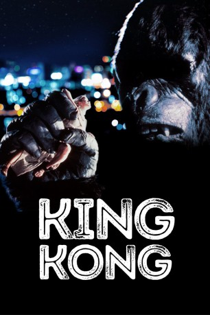

#5513 King Kong
Auszeichnungen: 1 Oscars gewonnen für 2 Oscars nominiert 1 GoldenGlobes gewonnen 1 BAFTA-Awards gewonnen
 
 IMDB-Wertung: 5.8 / 10
IMDB-Wertung: 5.8 / 10  Tomatometer: 53
Tomatometer: 53  Metascore: 0
Metascore: 0 
Fred Wilson Angestellter eines großen amerikanischen Öl-Konzerns, hat den Auftrag, neue Erdölquellen ausfindig zu machen. Mit einem gecharterten Boot macht er sich auf die Reise zu einer noch unbewohnten Insel. Mit an Bord ist auch ein blinder Passagier: Der Anthropologe Jack Prescott schmuggelte sich auf das Schiff, denn er will auf dieser Insel eine seltene Affenart untersuchen. Unterwegs nehmen sie noch die hübsche Dawn mit an Bord, die sie in einem Rettungsboot auflesen. Als das Schiff vor der Insel vor Anker geht, stellt sich jedoch heraus, dass diese doch nicht so unbewohnt ist, wie allseits angenommen. Die dort lebenden Eingeborenen führen gerade ein merkwürdiges Ritual auf, um einem überlebensgroßen Affen namens 'Kong' zu huldigen. Als sie die blonde Dawn erblicken, haben sie ihr 'Opfer' gefunden...
Jahr: 1976
Dauer: 134 Minuten
FSK: 12
Land: USA Studio: Paramount PicturesTonspuren:
Untertitel: Deutsch,
Auflösung: 1080p (1920x816) Größe: 8949 MB
Genre: Horror, Abenteuer, Fantasy
Regisseur: John Guillermin
Drehbuch: Ryûzô Kikushima
Soundtrack:
Darsteller:
 Jeff Bridges als Jack Prescott
Jeff Bridges als Jack Prescott Charles Grodin als Fred Wilson
Charles Grodin als Fred Wilson Jessica Lange als Dwan
Jessica Lange als Dwan John Randolph als Captain Ross
John Randolph als Captain Ross Rene Auberjonois als Bagley
Rene Auberjonois als Bagley- Julius Harris als Boan
 Jack O'Halloran als Joe Perko
Jack O'Halloran als Joe Perko- Dennis Fimple als Sunfish
 Ed Lauter als Carnahan
Ed Lauter als Carnahan- Mario Gallo als Timmons
 John Lone als Chinese Cook
John Lone als Chinese Cook John Agar als City Official
John Agar als City Official- Wayne Heffley als Air Force General
 Rick Baker als King Kong , uncredited
Rick Baker als King Kong , uncredited Corbin Bernsen als Reporter , uncredited
Corbin Bernsen als Reporter , uncredited Peter Cullen als King Kong , uncredited
Peter Cullen als King Kong , uncredited- Ned Gill als Crushed Spectator , uncredited
- Donald F. Glut als Guy in Amphitheater , uncredited
- Brent Huff als Extra , uncredited
- Shawn McAllister als Police Sergeant , uncredited
- James F. Murray Jr. als Extra , uncredited
- Joe Piscopo als Bit Part , uncredited
- Will Shephard als King Kong , uncredited
- David Ulmer als Man Running in Terror , uncredited
- Jorge Moreno als Garcia
- Garry Walberg als Army General
- Keny Long als Ape Masked Man
- Sid Conrad als Petrox Chairman
- George Whiteman als Army Helicopter Pilot
- Forrest J. Ackerman als Fleeing Extra in Crowd , uncredited
- Todd Baker als Shea Stadium Spectator , uncredited
- Ray Buktenica als Naval Officer , uncredited
- Larry M. Byrd als Excited Fan , uncredited
- S.C. Dacy als Newspaper Photographer , uncredited
- James Dunaway als Man in Audience , uncredited
 Walt Gorney als Subway Driver , uncredited
Walt Gorney als Subway Driver , uncredited- Eve McVeagh als Reporter , uncredited
- Larry Naschel als Victim , uncredited
- Ron Roccia als Extra , uncredited
- Ira S. Rosenstein als Logan , uncredited
- David Roya als Ship's Radio Operator , uncredited
- Kristephan Warren-Stevens als Kid with Afro on Bleachers , uncredited
- Booker James Winter als BG Crowd , uncredited
- Billy Zoom als Man Running from Monkey , uncredited
Datei: X:\1976\King Kong (1976, FSK12, 1920x816).mkv seit 13.02.2017
Festplatte: HD 1971-1979
 Es gibt insgesamt 31 Filme in der Gruppe '1976'
Es gibt insgesamt 31 Filme in der Gruppe '1976'